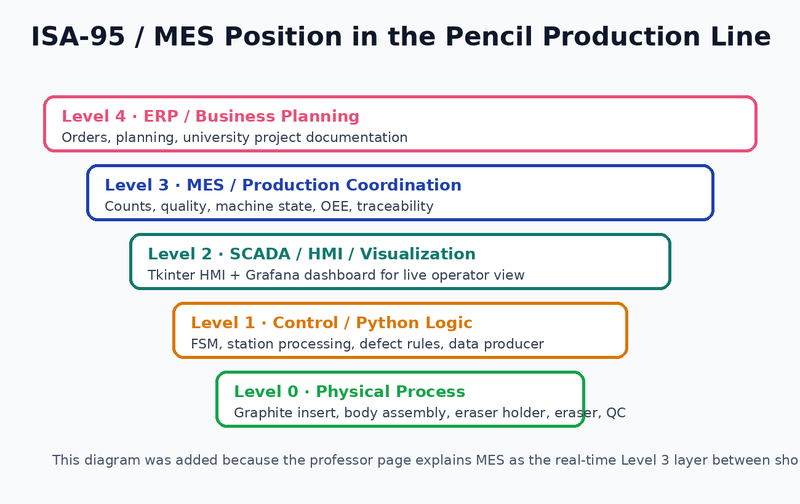
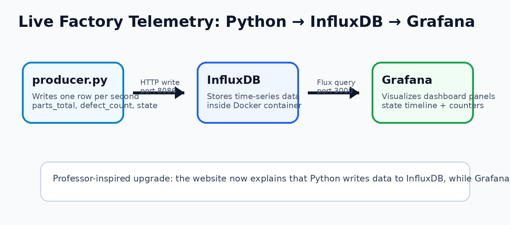
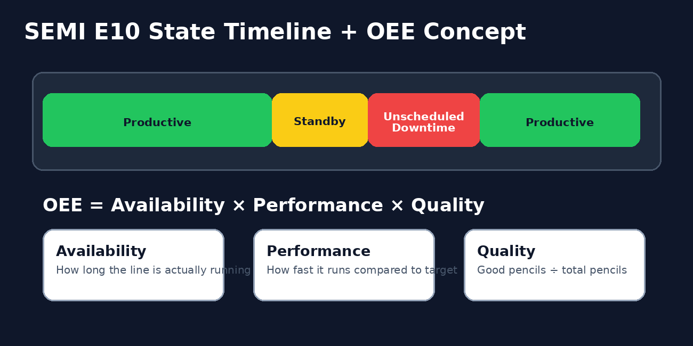
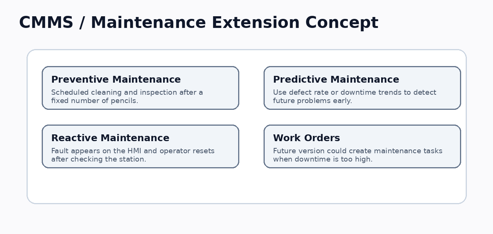

Pencil Production Line — System Architecture
Ismail Ibrahim Ahmed Rachid · Student ID: 100006790
Pencil Production Line — System Architecture
PHYSICAL LAYER · 5 Stations
BACK-END · production_line.py · Abstract Station base · FSM · E10 state log
FRONT-END · HMI (hmi.py)
DATA PIPELINE
ORCHESTRATION · Docker containers · MES at ISA-95 Level 3
Each service is separated: HMI, back-end logic, data producer, InfluxDB storage, and Grafana dashboard visualization.

Frontend / HMI
The HMI gives the operator direct control using Start, Stop, Reset, live machine state, product counters, and fault messages.

InfluxDB + Grafana
Production values are stored as time-series data and shown through Grafana dashboards for monitoring and analysis.
Why This Architecture Fits the Assignment
Separate Modules
The front end, back end, stations, database writer, and producer script are stored in separate files so the project does not look like one big script.
Course Concepts
The design uses HMI, FSM, SEMI E10 states, MES thinking, Docker, InfluxDB, and Grafana, matching the Advanced Programming production-line topic.
Quality Control
The back end clearly marks defective pencils and explains the defect reason before sending counters to the dashboard layer.
ISA-95 / MES Position
The project acts like a simplified MES learning model. It connects the operator view, production logic, quality information, and database logging.


Live Telemetry Pipeline
The Python producer sends data to InfluxDB. Grafana reads from InfluxDB, so the dashboard layer stays separate from the production logic.

SEMI E10 + OEE
Machine states classify operating time. Productive time improves performance, while Unscheduled Downtime reduces overall effectiveness.

CMMS Extension
A future maintenance module could create a work order when the defect rate or downtime becomes too high.